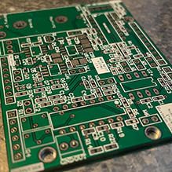
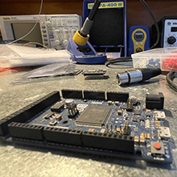
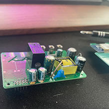

Hardware Experience
I'm a product design engineer with primary experience in starting from scratch and building the necessary hardware, firmware, software and cloud infrastructure to bring a prototype to production. I've created products in smart home automation for controlling and monitoring energy, HVAC systems with protocols in MODBus RTU, I've utilised hall-effect sensors, humidity, temperature, pressure, lighting, IR and beyond for many devices requiring I2C, SPI, etc. Many of my products feature Bluetooth, NFC, WiFi and other radiocommunication systems (LoRA, ZigBee, etc.) with antenna designs validated through a VNA. I've developed all the hardware through CAD in Altium Designer, being involved in the design process from component selection, Bill of Materials (BOM) creation and optimisation, schematic design, layout and footprints and integration with mechanical/industrial.
Production Experience
I've been hands-on from the get-go so I have a lot of experience in hand-soldering, rework and prototyping in small to larger production quantities with SMDs as small as 0201 and pitches as small as BGA or QFN packages. I've arranged for production of hundreds to thousands of units overseas so I am well versed in communicating and organising procurement to creating small runs as necessary for product deployment. I've also created the technical production manuals for these runs, testing jigs and programming instructions for these runs. As a product engineer I've worked with industrial designers, mechanical engineers and software engineers. I've worked with industrial designers and my own team of engineers to take products through compliance, meeting RCM, EMC, IP and AS/NZS 3000 series of tests for a variety of declared articles and non-declared articles for use in Australia.
Operations Experience
I'm familiar with software engineering, creating web servers, webapps and apps through Ruby on Rails, Flutter and Dotnet Framework in C++. I have experience with python, Arduino C and can rapidly build a functional prototype to meet specs all the way to a production environment. I'm very used to Agile frameworks, use of Git and have created in-house deployments of GitLab, Thingsboard and AWS EC2 instances to reduce company expenses on relying on third-party offerings. Since I've been in a startup and have grown and scaled I have experience in shifting focus from moving from heavily R&D focused to operational and customer-lead initiatives, leading the internship and mentoring program, management of larger teams and projects through documentation automation, KPI analysis and budget management and scaling operations for continuous product improvement.